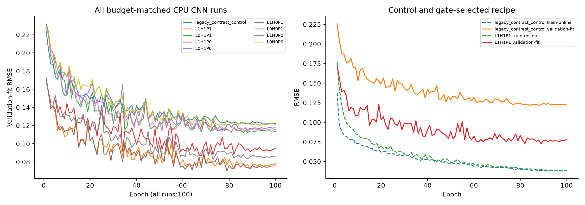
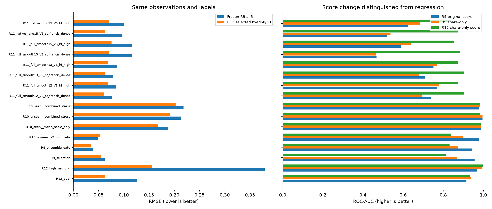

R12 CPU 개선 비교 결과
범위: 실제 Mac CPU 소형 학습과 고정 패널 비교다. Test.csv 및 공식 제출은 사용하지 않았다. 비공개 대회 생성기의 원인을 확정하거나 새 LB 점수를 예측하는 보고서가 아니다.
실행 결과: 원래 비교 17개(100 epoch CNN 9개 + LightGBM 회귀·분류 묶음 8개)와 엄격한 마스크 일치 추가 대조 2개를 완료했다. LightGBM 묶음마다 회귀기와 분류기를 각각 학습했다. 장시간 통과와 자연 HF 배경을 구분하지 못하던 실패는 로컬에서 상당히 개선됐지만, 미관측 사이트의 일반 패널은 악화됐다. 따라서 모든 환경에서 동시에 개선됐다는 판정이나 GPU 전체 학습 재개 판정은 내리지 않았다.
| 동일 패널 비교 | 기존 R9 RMSE → R12 | 기존 score AUC → R12 share-only AUC |
|---|
| 15분 smooth 통과 / St Francis | 0.116927 → 0.070341 | 0.467513 → 0.881891 |
| 실제 native 15분 / St Francis | 0.095733 → 0.063309 | 0.520109 → 0.872808 |
| 15분 smooth 통과 / HF 변동 | 0.116521 → 0.075561 | 0.589224 → 0.852800 |
| 고SNR·장시간 추가음 | 0.378832 → 0.155999 | 0.968250 → 0.996725 |
| 미관측 사이트의 일반 조건 | 0.048462 → 0.052278 | 0.978000 → 0.837713 |
위 AUC는 score 정의가 달라진 비교다. 기존 R9의 share-only AUC를 기준으로 보아도 15분 smooth/SF는 0.463295→0.881891, native/SF는 0.536763→0.872808로 개선됐다. 반면 미관측 일반 조건에서는 R9 share-only 0.899206→0.837713으로 떨어졌다. 아래 표에는 두 score를 모두 보존했다.
1. 무엇을 바꿨는가
모든 개선 신경망의 손실을 Share MSE + 0.25 × energy-weighted cell MSE로 고정했다. 기존 contrast BCE는 동일 예산의 대조 CNN 한 번에만 사용했다. 개선 후보의 진단 score는 예측 share 자체다. Contrast는 포화도를 관찰하기 위해서만 계산하며 손실과 제출 점수의 결합에 쓰지 않는다.
비교 축은 장시간 양성 보강(L), TRAIN의 고주파 변동·St Francis 고밀도 무추가 배경 보강(H), TRAIN 전용 PCA 잔차 및 주파수 곡률 특징(P)이다. 2×2×2의 8개 조건과 기존 손실 대조 1개를 비교했다. PCA 추가는 기존 관측값과 TRAIN 배경으로부터 계산한 표현·사전정보이며, 새로운 센서 정보를 얻거나 성분 분리의 식별성을 보장하는 방법이 아니다.
H1 해석의 주의점: TRAIN 감사에서 원형 HF/SF 보강은 관측 밀도와 정답의 연관도 바꿨다. SF 15분 관측군의 무추가 비율은 20.68%→66.97%, SF 내부 −Nobs 단독 AUC는 0.503→0.795였다. 따라서 H1의 성능 차이를 HF 대조 효과만으로 해석하면 안 된다. 기존 실험과 선택 정책은 보존하고, 별도의 사이트·센서·녹음기 라벨·관측 마스크 일치 대조군을 추가했다. 전체 TRAIN 마스크 교차표
2. 데이터와 검증
각 TRAIN 파일은 12,000개 합성 창(15분×25대역)이며, 무추가 2,400개·양성 9,600개다. CNN은 고정된 공통 6,000개 부분집합(무추가 1,200개·양성 4,800개), LightGBM은 12,000개 전체를 사용했다. 같은 row index를 조건별로 대응시켰다. 변형 파일의 수를 독립 녹음 수로 세지 않는다.
장시간 조건은 L1 TRAIN 양성의 30%다. 공통 validation의 양성에서는 50%, 별도 고SNR·장시간 패널에서는 100%로 구성해 장시간 전이를 더 엄격히 평가했다. 실제 native 장시간 참조 7개뿐 아니라 5~14분 참조 106개의 통계 행렬에 완만한 12~15분 궤적을 적용했다. 12~15분은 마스킹 전 생성 궤적의 길이이며, 결측이 있으면 실제 관측 support는 더 짧을 수 있다. 이는 새로 수집한 장시간 WAV가 아니다. 같은 hull·인접 시각이어도 수신기 연속성을 증명할 메타데이터가 없어 임의로 연결하지 않았다.
모든 양성은 sum(OA)>0을 만족한다. 관측 마스크와 짧은 edge 경로가 충돌하면 같은 참조의 유효 위치로 재배치하고, 불가능한 edge는 inside로 바꿔 기록했다. 실제 무추가 비율은 정확히 20%다. 정답 q/y는 알려진 비반올림 성분 에너지로 계산하며, 입력과 풀링 가중치는 0.1 dB 관측에서 계산한다.
검증은 fit 1,000개, recipe 선택용 gate 500개, 선택 후 평가 500개다. 원천 그룹 분리와 900초 support 기준 24시간 purge를 유지했다. 새 검증 row는 과거 R11에서 사용한 row와 겹치지 않지만 원천 그룹은 이미 진단에 노출됐고 VTUAD 참조도 역할 간 공유한다. 따라서 완전한 맹검 또는 참조 독립 CV라고 부르지 않는다.
새 validation의 고밀도 St Francis 배경은 0개다. 특별 HF 무추가 배경은 fit/gate/eval 각각 28/4/10개로, 계획 대비 72/46/40개 부족하다. 부족한 부분은 일반 무추가 배경으로 남겼다. TRAIN 보강 할당량은 충족됐다. 이 한계는 기존 R11 SF/HF 패널의 별도 보고로 구분했다.
PCA는 고유 TRAIN 배경 2,000개에서만 적합했다. 안전 대역 0~22에서 분별 평균 레벨을 제거한 3성분의 설명 분산은 85.07%다. 첨부 제안의 93% 전제를 그대로 적용하지 않았다. 신규 잔차 특징은 상위 두 불확실 대역을 쓰지 않는다. 0.1 dB 격자와 교환 가능한 공통 gain 이동은 불변이며, 반올림 경계를 넘는 임의 gain 이동까지 수치적으로 완전 불변이라고 주장하지 않는다.
사전 고정된 정방향 스칼라 점검에서 양의 PCA 잔차 RMS는 full15/SF AUC 0.1032, native15/SF AUC 0.0989로 오히려 역전됐다. 따라서 “양의 잔차가 크면 추가 선박음”이라고 단정하면 안 된다. 부호가 있는 잔차 평균은 각각 0.8741/0.8711이었지만, 이 역시 전체 모델의 성능이나 에너지 분리의 식별성을 증명하지 않는다. 이미 구성한 signed 잔차·양의 잔차·곡률 세 채널을 모두 유지했고 이 결과로 실험 설정을 바꾸지 않았다. 모든 스칼라와 독립 검산
기존 8채널에도 주파수 형태 정보가 전혀 없었던 것은 아니다. 관측 셀에서는 시간 중앙값 차감 채널과 상대 스펙트럼 채널을 합쳐 Q(db) − median_tf(Q(db)) = 10 × ch0 + 20 × ch4를 복원할 수 있다. 이는 반올림 전 원시 dB가 아니라 공통 gain을 제거한 0.1 dB 격자다. PCA 잔차는 사라진 원시 정보를 되찾는 것이 아니라, TRAIN 배경으로부터 얻은 사전정보를 더 쉽게 학습하도록 명시적으로 표현한 것이다.
데이터 구축과 423개 검산 · 특징 검증 · 학습 엔진 검증
3. 실제 100 epoch CNN 결과
모든 CNN은 동일한 약 2.7만 파라미터 구조다. Shape-off도 추가 세 채널을 0으로 패딩해 모델 크기를 유지했다. Adam, dropout 0.1, 학습률 0.001에서 고정 100 epoch cosine schedule, early stopping 없음이다. 최고 checkpoint는 fit RMSE로만 골랐다. 이 선택은 관찰한 checkpoint 중 최적값이며 전역 최소해의 수학적 증명이 아니다.
| 조건 | 파라미터 | 실행 epoch | best epoch | fit RMSE | fit share AUC | 진단 contrast≥.99 |
|---|
| legacy_contrast_control | 26953 | 100 | 84 | 0.121630 | 0.896162 | 59.5% |
| L1H1P1 | 26953 | 100 | 89 | 0.072753 | 0.918800 | 4.8% |
| L0H1P1 | 26953 | 100 | 88 | 0.112350 | 0.898056 | 3.8% |
| L1H1P0 | 26953 | 100 | 68 | 0.086615 | 0.894531 | 2.3% |
| L0H1P0 | 26953 | 100 | 88 | 0.114024 | 0.886513 | 4.3% |
| L1H0P1 | 26953 | 100 | 79 | 0.069967 | 0.911862 | 5.6% |
| L0H0P1 | 26953 | 100 | 81 | 0.112511 | 0.901063 | 2.3% |
| L1H0P0 | 26953 | 100 | 73 | 0.082597 | 0.885700 | 1.4% |
| L0H0P0 | 26953 | 100 | 72 | 0.118603 | 0.882656 | 3.3% |

4. 선택된 레시피와 고정 패널 전이
선택된 조건은 L1H1P1다. 새 gate의 RMSE로만 선택했으며, CNN과 트리 share를 각각 50%로 고정했다. Test/리더보드 값으로 가중치·보정값·타깃 분포를 맞추지 않았다. 선택 정책 파일을 고정한 후 eval을 열었다. R11 패널은 이미 실패 조건을 발견하는 데 사용했으므로 개발용 전이 점검이지 새 맹검은 아니다.
| 고정 50/50 레시피 | gate RMSE | 선택 후 eval RMSE | full15/SF RMSE | full15/SF score AUC | native15/HF score AUC |
|---|
| L0H0P0 | 0.126647 | 0.118216 | 0.105172 | 0.638904 | 0.743388 |
| L0H0P1 | 0.121279 | 0.108891 | 0.105174 | 0.673378 | 0.762880 |
| L0H1P0 | 0.126699 | 0.111901 | 0.098672 | 0.765756 | 0.791368 |
| L0H1P1 | 0.118042 | 0.109148 | 0.100804 | 0.788840 | 0.798744 |
| L1H0P0 | 0.095287 | 0.065651 | 0.079909 | 0.716756 | 0.785704 |
| L1H0P1 | 0.086380 | 0.064203 | 0.072353 | 0.810571 | 0.807148 |
| L1H1P0 | 0.092090 | 0.068731 | 0.077821 | 0.819404 | 0.815036 |
| L1H1P1 | 0.084048 | 0.062221 | 0.070341 | 0.881891 | 0.843772 |
| 패널 | R12 RMSE | R12 share AUC | R12 score AUC | R12 bias | 기존 R9 RMSE / share AUC / score AUC |
|---|
| R12_validation_gate | 0.084048 | 0.883575 | 0.883575 | +0.015097 | — |
| R12_eval | 0.062221 | 0.934400 | 0.934400 | -0.004716 | 0.126708 / 0.935450 / 0.915250 |
| R12_high_snr_long | 0.155999 | 0.996725 | 0.996725 | -0.110986 | 0.378832 / 0.992925 / 0.968250 |
| R9_selection | 0.055018 | 0.812629 | 0.812629 | +0.010952 | 0.061953 / 0.868289 / 0.955967 |
| R9_ensemble_gate | 0.034602 | 0.831269 | 0.831269 | +0.001390 | 0.038135 / 0.873012 / 0.944843 |
| R10_unseen__r9_complete | 0.052278 | 0.837712 | 0.837712 | +0.006953 | 0.048462 / 0.899206 / 0.978000 |
| R10_seen__mean_scale_only | 0.167269 | 0.986719 | 0.986719 | -0.082262 | 0.187706 / 0.987938 / 0.987669 |
| R10_unseen__combined_stress | 0.190752 | 0.985156 | 0.985156 | -0.097354 | 0.212688 / 0.995000 / 0.994938 |
| R10_seen__combined_stress | 0.202444 | 0.980537 | 0.980537 | -0.107551 | 0.218129 / 0.982650 / 0.979706 |
| R11_full_smooth12_VS_st_francis_dense | 0.060731 | 0.903083 | 0.903083 | +0.021169 | 0.075888 / 0.693692 / 0.737494 |
| R11_full_smooth12_VS_hf_high | 0.068459 | 0.874132 | 0.874132 | +0.025569 | 0.084569 / 0.778160 / 0.769172 |
| R11_full_smooth13_VS_st_francis_dense | 0.061838 | 0.902436 | 0.902436 | +0.018751 | 0.078373 / 0.679564 / 0.709949 |
| R11_full_smooth13_VS_hf_high | 0.069260 | 0.872680 | 0.872680 | +0.023605 | 0.086390 / 0.769780 / 0.750828 |
| R11_full_smooth15_VS_st_francis_dense | 0.070341 | 0.881891 | 0.881891 | +0.008763 | 0.116927 / 0.463295 / 0.467513 |
| R11_full_smooth15_VS_hf_high | 0.075561 | 0.852800 | 0.852800 | +0.015495 | 0.116521 / 0.640988 / 0.589224 |
| R11_native_long15_VS_st_francis_dense | 0.063309 | 0.872808 | 0.872808 | +0.001399 | 0.095733 / 0.536763 / 0.520109 |
| R11_native_long15_VS_hf_high | 0.070331 | 0.843772 | 0.843772 | +0.009515 | 0.099587 / 0.685920 / 0.625856 |
| 장시간 대조 | CNN share AUC | Tree share AUC | 독립 Tree classifier AUC | Tree hybrid score AUC | 선택 Blend share AUC |
|---|
| R11_full_smooth15_VS_st_francis_dense | 0.866692 | 0.875718 | 0.944494 | 0.942583 | 0.881891 |
| R11_full_smooth15_VS_hf_high | 0.861104 | 0.840932 | 0.823804 | 0.824440 | 0.852800 |
| R11_native_long15_VS_st_francis_dense | 0.865878 | 0.863974 | 0.950814 | 0.948712 | 0.872808 |
| R11_native_long15_VS_hf_high | 0.857540 | 0.827540 | 0.829824 | 0.829300 | 0.843772 |
R12 소형 blend와 기존 R9 all5는 관측·정답을 똑같이 평가하지만 모델 구조·훈련량·앙상블 구성이 다르다. 순수한 loss/L/H/P 효과는 동일 예산의 R12 조건끼리 비교해야 한다. R9 대조는 기존 실제 파이프라인에서 얼마나 달라졌는지 보여주는 전이 비교다.
R12 blend의 score는 share이므로 두 AUC는 같다. 기존 R9의 score 산식이 달랐기 때문에 R9 share-only AUC도 함께 비교해야 한다. AUC 상승만으로 회귀 추정이 좋아졌다고 판정하지 않는다. 목표 AUC 0.80과 세 패널의 RMSE 동시 개선을 달성하지 못한 조건도 그대로 포함했다.
남은 문제: 미관측 사이트 일반 패널에서 선택 모델의 RMSE는 0.052278로, 동일 예산 R12 원형 0.049061 및 기존 R9 0.048462보다 나쁘다. 고SNR·장시간 패널은 RMSE가 줄었어도 평균 bias가 −0.110986이고 y>0.2가 SSE의 99.415%를 차지해 과소추정이 남았다. 장시간 예제 보강과 기존 짧은 통과 성능 사이의 균형이 아직 해결되지 않았다.

5. 전체 수치와 해석 범위
전체 모델×패널 CSV · 선택 정책 · 대응 bootstrap 구간 · 검증 실행 기록
독립 검산에서 주요 지표 7,497개는 저장 예측값으로 재계산한 결과와 일치했다. 최초 검산은 bootstrap의 float32/float64 차이 약 8×10⁻⁹에서 실패했고 그 기록을 보존했다. 검산 v2는 원 float32 방식의 bootstrap 끝점을 정확히 재현하고, 별도 float64 계산의 미세 정밀도 차이도 분리 확인했다. 평가 결과나 모델을 바꿔 통과시킨 것이 아니다. 독립 검산 v2
원 평가의 classifier 136개·contrast 153개 집계행은 구성요소 원배열이 보존되지 않아 전체 raw 단위 독립 재검산 범위에 포함되지 않는다. share/score 원예측 기반 지표와 별도로 이 한계를 기록했다. 추가 matched 평가에는 전체 q/contrast/classifier 원배열을 저장했다.
반복 비교의 신뢰구간은 평가 로더가 제공한 background_group 또는 source ID를 군집으로 사용했다. 단, R10 unseen 2개 패널의 CI는 null이다. 원자료에 base_window_index 및 sensor/week 메타데이터는 있지만 현재 로더의 군집 fallback에 연결되지 않았다. 이를 원천 식별자가 전혀 없다는 뜻으로 해석하면 안 된다. 점추정 RMSE/AUC는 계산됐다. CI coverage 메모
CI는 전체 참조·녹음일의 불확실성과 다중 비교를 완전히 보정하지 않는다. 새 eval에서 동일 예산 원형 대비 ΔRMSE는 −0.055995, 조건부 95% CI는 [−0.071100, −0.043100]이다. Δshare-AUC는 +0.0079, CI [−0.00928, +0.02207]로 0을 포함하므로 해당 새 eval의 AUC까지 확실히 개선됐다고 주장하지 않는다. 고SNR 조건은 타깃 분포도 바뀌므로 RMSE가 커졌다는 이유만으로 원인을 하나로 확정할 수 없다.
GPU 본학습 준비 여부는 위 교차 패널의 실제 개선으로 판단해야 한다. 이 소형 비교가 끝났다는 이유만으로 5-Fold 대형 모델 전체가 학습됐거나, 공식 LB 성능이 입증됐다고 표시하지 않는다.
6. 추가 대조: 관측 밀도와 녹음기까지 고정한 HF 보강
원래 8개 실험의 H1에 새 마스크 교란이 있음을 TRAIN 감사로 발견한 뒤, 추가 대조군 L1HM1P1을 별도로 만들었다. 기본은 L1H0P1과 같은 장시간·스펙트럼 잔차 조건이고, 무추가 배경만 동일 사이트·센서 그룹·세부 녹음기 라벨·정확한 관측 마스크 안에서 HF 변동 상위 후보로 바꿨다. 양성 배열과 정답·모든 행의 마스크/사이트/녹음기 분포를 보존했다. 이는 메타데이터 라벨 일치이며 물리적 기기의 모든 특성이 영원히 동일하다는 보장은 아니다.
목표 1,200개 중 1,199개를 교체했고, 후보가 부족한 1개는 원래 배경으로 남겼다. CNN 부분집합에서는 599개를 교체했다. 마스크 단독 AUC의 변화는 정확히 0이었다. 추가 CNN도 100 epoch/Adam/동일 예산으로 학습하고 트리도 같은 설정을 사용했다. 원래 8개 레시피의 gate 선택을 소급 변경하지 않고, 결과를 별도 비교했다.
추가 대조 초기 v1은 최종 녹음기 라벨 검산 전에 시작되어 중단했다. 해당 부분 checkpoint는 보존하고 재사용하지 않았다. 엄격한 v2 자료의 독립 검산을 마친 뒤 r2에서 처음부터 다시 학습했다. 원래 17개 모델의 학습은 중단하지 않았다. 중단 기록 · 최종 대조자료와 검산
| 같은 패널 | 추가 matched Blend RMSE | share AUC | score AUC | bias |
|---|
| R12_validation_gate | 0.090328 | 0.888125 | 0.888125 | +0.014500 |
| R12_eval | 0.062234 | 0.938300 | 0.938300 | -0.002600 |
| R12_high_snr_long | 0.156340 | 0.996825 | 0.996825 | -0.111366 |
| R9_selection | 0.055490 | 0.814431 | 0.814431 | +0.011175 |
| R9_ensemble_gate | 0.033557 | 0.837354 | 0.837354 | +0.002256 |
| R10_unseen__r9_complete | 0.052679 | 0.844269 | 0.844269 | +0.007800 |
| R10_seen__mean_scale_only | 0.160046 | 0.984525 | 0.984525 | -0.074884 |
| R10_unseen__combined_stress | 0.189233 | 0.984281 | 0.984281 | -0.095227 |
| R10_seen__combined_stress | 0.200386 | 0.976231 | 0.976231 | -0.104098 |
| R11_full_smooth12_VS_st_francis_dense | 0.066016 | 0.847763 | 0.847763 | +0.024626 |
| R11_full_smooth12_VS_hf_high | 0.072166 | 0.874928 | 0.874928 | +0.025104 |
| R11_full_smooth13_VS_st_francis_dense | 0.066677 | 0.845173 | 0.845173 | +0.022488 |
| R11_full_smooth13_VS_hf_high | 0.072658 | 0.872744 | 0.872744 | +0.023368 |
| R11_full_smooth15_VS_st_francis_dense | 0.074042 | 0.820224 | 0.820224 | +0.012865 |
| R11_full_smooth15_VS_hf_high | 0.078235 | 0.855400 | 0.855400 | +0.015554 |
| R11_native_long15_VS_st_francis_dense | 0.069205 | 0.806051 | 0.806051 | +0.007321 |
| R11_native_long15_VS_hf_high | 0.074552 | 0.845136 | 0.845136 | +0.011053 |
엄격한 matched 추가 대조에서도 full15/SF AUC 0.820224, native15/SF AUC 0.806051로 기존 붕괴보다 좋아졌고 새 eval RMSE는 0.062234였다. 그러나 원 H1 선택 조합의 SF AUC(0.881891/0.872808)보다는 낮았다. 원래 H1의 향상 전부를 HF 배경 학습 효과라고 볼 수 없다는 경고가 실제 비교에서도 남는다. matched 대조도 미관측 일반 RMSE 0.052679, 고SNR bias −0.111366을 보여 두 문제를 해소하지 못했다. 추가 대조는 원래 선택된 레시피를 소급 교체하지 않았다.
추가 대조 전체 모델·기존 조건 비교 · 대응 CI · raw 마스크·진단 구성요소 및 입력 증빙
사전 고정 실험 설정 · R11 진단